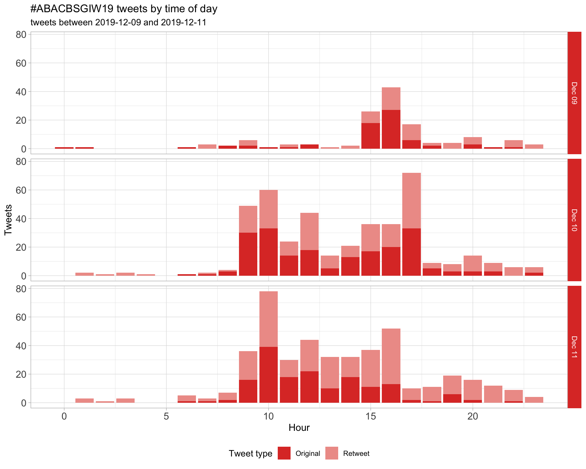
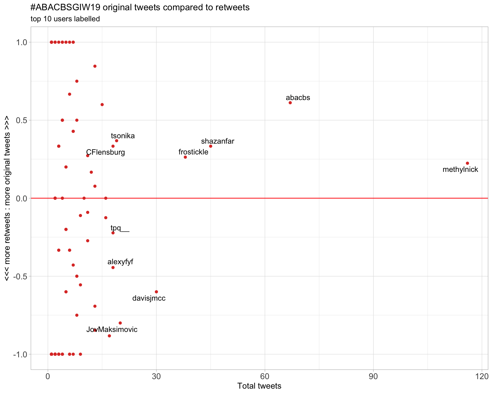
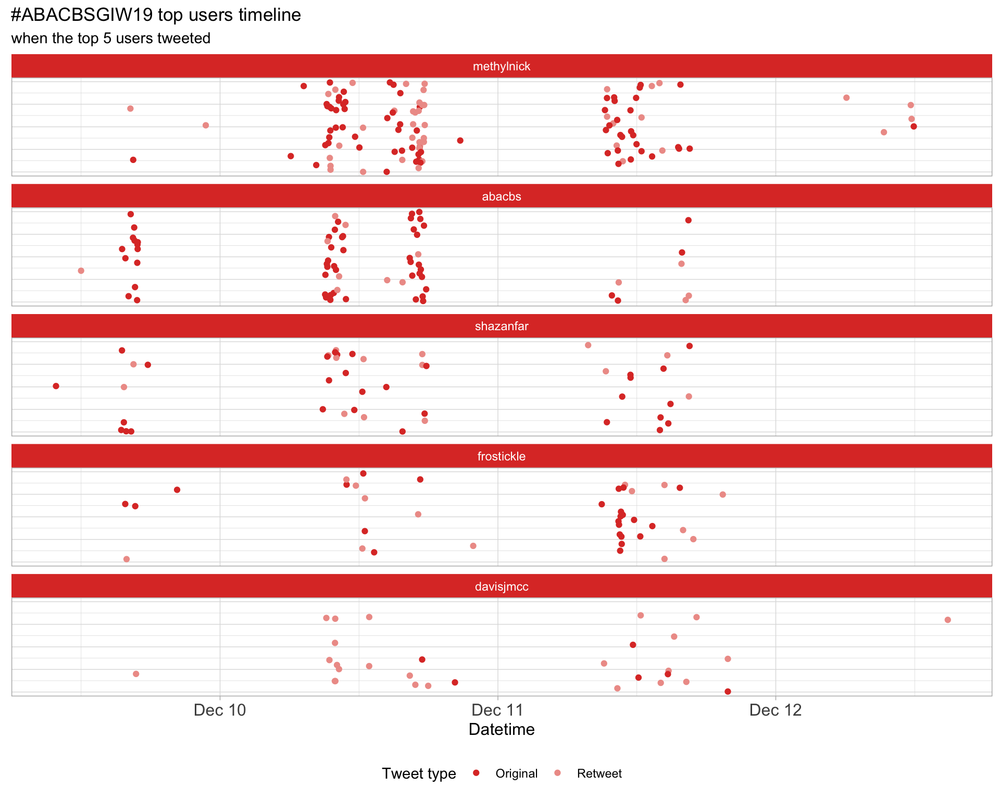
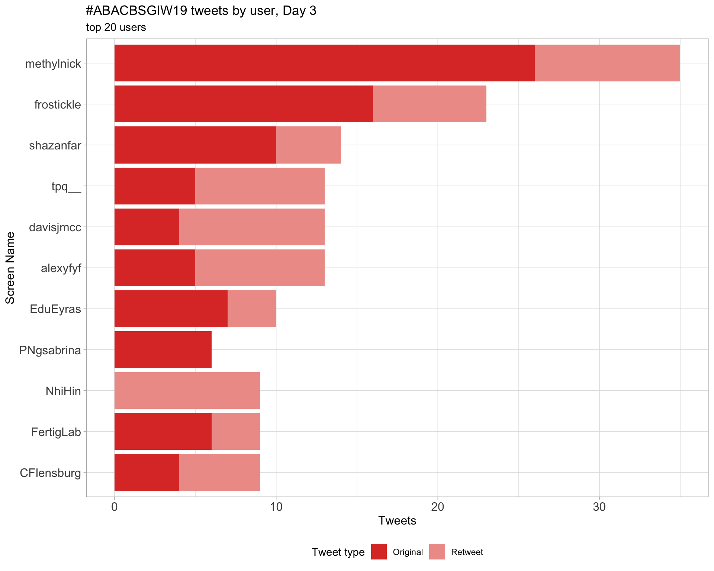
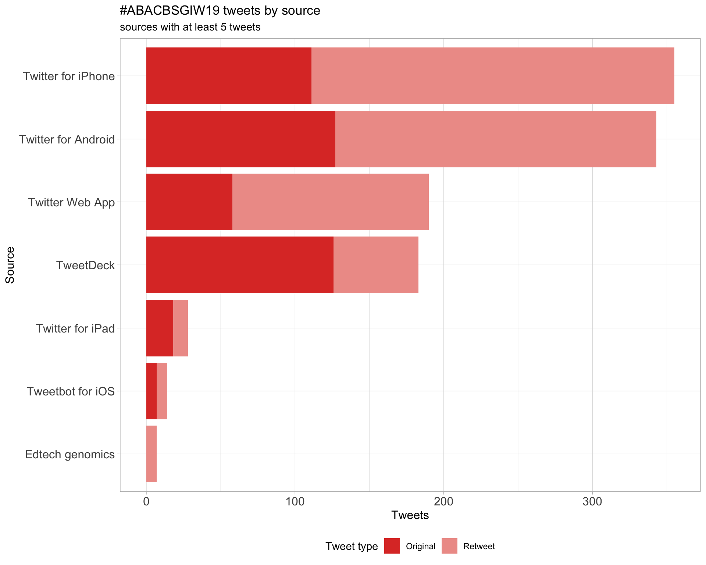
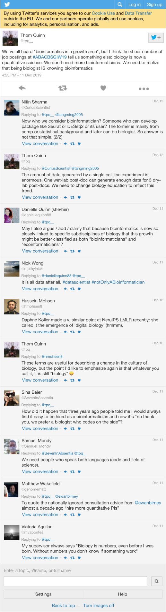
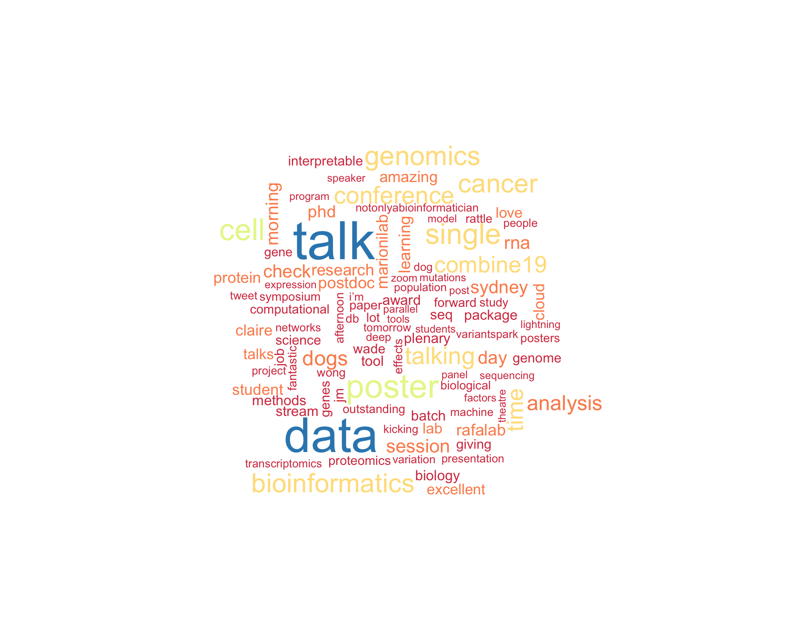
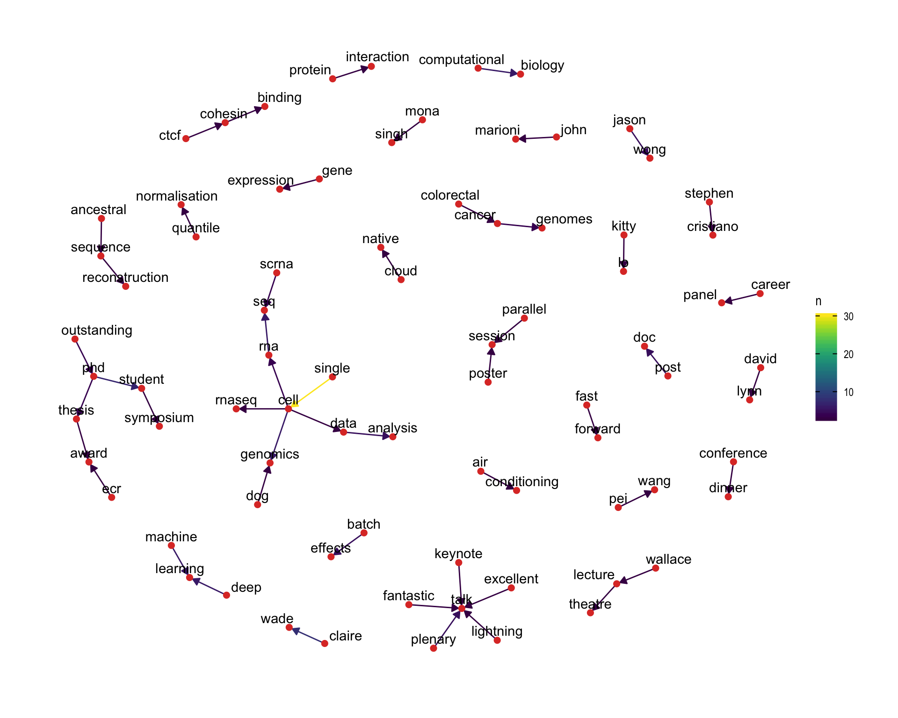

ABACBSGIW19
ABACBS/GIW Conference 2019
2019-12-10 08:56:04
Parameters
| Parameter | Value |
|---|---|
| hashtag | #ABACBSGIW19 |
| start_day | 2019-12-09 |
| end_day | 2019-12-11 |
| timezone | Australia/Sydney |
| theme | theme_light |
| accent | #de3b30 |
| accent2 | #EE9D97 |
| kcore | 2 |
| topics_k | 6 |
| bigram_filter | 3 |
| fixed | FALSE |
| seed | 1 |
1 Introduction
An analysis of tweets from the #ABACBSGIW19 hashtag for the joint ABACBS/GIW conference 2019.
A total of 521 tweets from 126 users were collected using the rtweet R package.
2 Timeline
2.1 Tweets by day

2.2 Tweets by day and time
Filtered for dates 2019-12-09 - 2019-12-11 in the Australia/Sydney timezone.

3 Users
3.1 Top tweeters
Overall
Original

Retweets
3.2 Retweet proportion

3.3 Top tweeters timeline

3.4 Top tweeters by day
Overall
Day 1
Day 2

Day 3

Original
Day 1

Day 2
Day 3
Retweets
Day 1
Day 2

Day 3

4 Sources

5 Networks
5.1 Replies
The “replies network”, composed from users who reply directly to one another, coloured by PageRank.

5.2 Mentions
The “mentions network”, where users mention other users in their tweets. Filtered for a k-core of 2. Node colour and size adjusted according to PageRank score.

6 Tweet types
6.1 Retweets
Proportion
Count

Top 10
| screen_name | text | retweet_count |
|---|---|---|
| dgmacarthur | Hey #ABACBSGIW19 - interested in a postdoc, comp bio, stat gen, or software engineer position doing cool stuff with large-scale human sequencing data in Sydney or Melbourne, starting after May 2020? Drop me a line. Job descriptions going live early 2020! https://t.co/suFvy8KfRw | 18 |
| slimsuite | #ABACBSGIW19 Poster #33 - Using long read depth profiles (and BUSCO) to estimate genome size. (And the data I regret leaving out of the cane toad genome paper…) https://t.co/KYhJbJdnYw | 6 |
| paulfharrison |
Kitty Lo describing Sierra package for detecting differential transcripts (ie APA) from single cell data. One clever feature is a splice-aware peak caller. https://t.co/PkC1uFkwcM #ABACBSGIW19 |
6 |
| paulfharrison |
.@rafalab describing problems with log(count/total+1) in single cell. Fixes PCA using CRAN package “glmpca”. Here is my hackier approach: https://t.co/zmfT1OKfH9 I think scTransform would also fix this problem, since it doesn’t log transform. #ABACBSGIW19 |
6 |
| MarkPinese | Guys, I don’t mean to be snarky but when we’re doing tool comparisons, can we please establish a ground truth first? Just because two tools agree with each other doesn’t mean they’re both right. Bias is by its nature consistent #ABACBSGIW19 | 5 |
| frostickle |
Dr Kitty Lo presenting the Sierra R package, designed for detecting differential transcript usage analysis from polyA-enriched single cell RNASeq data. Check out their poster if you’re here at #ABACBSGIW19! Or their github here: https://t.co/lJPlGgTIy2 @AliciaOshlack https://t.co/spjdCwhCUq |
5 |
| CFlensburg | .@rafalab kicks off the plenary talk on single cells sequencing by warning that a pipeline where something goes wrong often gives the wrong result, rather than an error. QC important. #ABACBSGIW19 | 5 |
| AliciaOshlack | Congratulations @nadia_davidson for the @abacbs ECR award. This is well deserved recognition for all the awesome work you have done (check out all her work!) I know you’ll have an amazing career ahead as well #ABACBSGIW19 https://t.co/zG3Da8hMLu | 5 |
| JovMaksimovic | For everyone who will be attending the @abacbs post doc event at 6pm tonight in the beer garden at the Alfred Hotel (https://t.co/qzQ8iLSUtt) there will be a bar tab! Enjoy the üçª and say ‚ÄúHi!‚Äù to Ignatius Pang who has kindly stepped in to host in my stead #combine19 #ABACBSGIW19 | 4 |
| shazanfar | .@MarioniLab described excellent work by lab member @RArgelaguet on MOFA - multiomics factor analysis for understanding this rich dataset #ABACBSGIW19 https://t.co/MSbRHHslRv | 4 |
Most retweeted

6.2 Likes
Proportion

Count

Top 10
| screen_name | text | favorite_count |
|---|---|---|
| AliciaOshlack | Congratulations @nadia_davidson for the @abacbs ECR award. This is well deserved recognition for all the awesome work you have done (check out all her work!) I know you’ll have an amazing career ahead as well #ABACBSGIW19 https://t.co/zG3Da8hMLu | 47 |
| MarkPinese | Guys, I don’t mean to be snarky but when we’re doing tool comparisons, can we please establish a ground truth first? Just because two tools agree with each other doesn’t mean they’re both right. Bias is by its nature consistent #ABACBSGIW19 | 30 |
| YiwenWang_Eva | Thanks for the chance to present my work #combine19 My poster is packed up and ready for ABACBS. üòâ#ABACBSGIW19 https://t.co/i3l4anaUXH | 30 |
| lnly0311 | Thanks @combine_au for giving me the best poster presentationüòÜ! Today‚Äôs career panel and social night are definitely excellent. Big shout out to the symposium organisers for such a good day. Looking forward to the next two days at #ABACBSGIW19 conference! https://t.co/eolNglQINO | 29 |
| CFlensburg | .@rafalab kicks off the plenary talk on single cells sequencing by warning that a pipeline where something goes wrong often gives the wrong result, rather than an error. QC important. #ABACBSGIW19 | 28 |
| SHollizeck | If you didn’t get a chance to talk to me at my poster today, see me on Wednesday at number 150. #ABACBSGIW19 https://t.co/A2RpCIOPKh | 27 |
| dgmacarthur | Hey #ABACBSGIW19 - interested in a postdoc, comp bio, stat gen, or software engineer position doing cool stuff with large-scale human sequencing data in Sydney or Melbourne, starting after May 2020? Drop me a line. Job descriptions going live early 2020! https://t.co/suFvy8KfRw | 24 |
| gabefoley | Thanks @combine_au for second place in the poster presentations! If you’re interested in ancestral sequence reconstruction and missed me today - come check out my talk tomorrow morning at @abacbs in Session 3c Proteomics / Metabolomics #COMBINE19 #ABACBSGIW19 https://t.co/MypibiOo41 | 23 |
| jasonwwong | Super proud of @rebecca_poulos for winning the ABACBS Outstanding PhD Thesis Award!! Very well deserved Rebecca! #ABACBSGIW19 https://t.co/NBGSYnLXJi | 23 |
| abacbs | 2019 ABACB Open Source and Open Science Award: Gordon Smyth #ABACBSGIW19 | 19 |
Most likes

6.3 Quotes
Proportion
Count

Top 10
| screen_name | text | quote_count |
|---|---|---|
| allPowerde | Hi #ABACBSGIW19, want to join a cloud-native group to work on a new science discipline? Application deadline was yesterday but if you are interested DM or speak to me at #ABACBSGIW19 today. #postdoc https://t.co/YHfKo3ZKap | 1 |
| dgmacarthur | Hey #ABACBSGIW19 - interested in a postdoc, comp bio, stat gen, or software engineer position doing cool stuff with large-scale human sequencing data in Sydney or Melbourne, starting after May 2020? Drop me a line. Job descriptions going live early 2020! https://t.co/suFvy8KfRw | 1 |
| JovMaksimovic | The @abacbs postdoc survey is closing tomorrow at the end of the #ABACBSGIW19 conference. If you are a newbie postdoc (#combine19), a veteran postdoc or postdoc-identifying please complete the survey and let ABACBS know how they can best support and advocate for you. https://t.co/sIObXAFeEP | 1 |
| LeganaFingerhut | My poster for #ABACBSGIW19 moved to spot 31! Come have a look! I’m happy to answer any questions you may have! @abacbs https://t.co/8bE1JKNfkd https://t.co/CL8cWXU6el | 1 |
| combine_au | Thanks @shazanfar! Yes we still have an amazing lineup of career panel! Please make your way to CPC main building level 6 after the opening session of #ABACBSGIW19 https://t.co/MXgOIZwQ8a | 1 |
| shazanfar | Good morning #ABACBSGIW19 ! Remember we are at Wallace Lecture theatre (map below) for the single stream part of the conference @abacbs https://t.co/KKkitTZ6Ev | 1 |
| shazanfar | How much is this a problem due to using transcriptomic readout as a proxy for surface protein abundance, in addition to general sparsity of Tx data? #ABACBSGIW19 @rafalab https://t.co/6V3Q4kkWVs | 1 |
| tsonika | Tyrone and Javier would love to discuss their work with you. Go say hello! #ABACBSGIW19 #COMBINE19 https://t.co/f22R3xhWcK | 1 |
| methylnick | Well done. Congrats. #ABACBSGIW19 https://t.co/MmFdHDl2qa | 1 |
| methylnick | starting to feel the respiratory issues with the smoke haze, really feel for the sydney residents, I have only been here one day for @abacbs #ABACBSGIW19 https://t.co/uXeuqggVrI | 1 |
Most quoted

7 Media
Proportion

Top 10
| screen_name | text | favorite_count |
|---|---|---|
| AliciaOshlack | Congratulations @nadia_davidson for the @abacbs ECR award. This is well deserved recognition for all the awesome work you have done (check out all her work!) I know you’ll have an amazing career ahead as well #ABACBSGIW19 https://t.co/zG3Da8hMLu | 47 |
| YiwenWang_Eva | Thanks for the chance to present my work #combine19 My poster is packed up and ready for ABACBS. üòâ#ABACBSGIW19 https://t.co/i3l4anaUXH | 30 |
| lnly0311 | Thanks @combine_au for giving me the best poster presentationüòÜ! Today‚Äôs career panel and social night are definitely excellent. Big shout out to the symposium organisers for such a good day. Looking forward to the next two days at #ABACBSGIW19 conference! https://t.co/eolNglQINO | 29 |
| SHollizeck | If you didn’t get a chance to talk to me at my poster today, see me on Wednesday at number 150. #ABACBSGIW19 https://t.co/A2RpCIOPKh | 27 |
| gabefoley | Thanks @combine_au for second place in the poster presentations! If you’re interested in ancestral sequence reconstruction and missed me today - come check out my talk tomorrow morning at @abacbs in Session 3c Proteomics / Metabolomics #COMBINE19 #ABACBSGIW19 https://t.co/MypibiOo41 | 23 |
| jasonwwong | Super proud of @rebecca_poulos for winning the ABACBS Outstanding PhD Thesis Award!! Very well deserved Rebecca! #ABACBSGIW19 https://t.co/NBGSYnLXJi | 23 |
| LinYingxin | Ready for the three-day bioinformatics and computational biology conference in Sydney? üë©‚Äçüíªüßë‚Äçüíª 14 hours left for COMBINE/AYRCOB student symposium 2019 registration open! üòé#ABACBSGIW19 #combine19 #abacbs @combine_au @abacbs https://t.co/AoJ8uvJwAK | 18 |
| shazanfar | #ABACBSGIW19 I think my favourite part of conferences is the lightning/fast forward talks! Except when I‚Äôm presenting, then it‚Äôs my least favourite ü§Ø excellent emceeing @TheEllisPatrick ! https://t.co/1klPdoOys3 | 17 |
| methylnick | This river plot is next level. @MarioniLab @abacbs #ABACBSGIW19 #visualisation @MonashBioinfo https://t.co/SuAZL98LaE | 17 |
| HaniKim127 | Thank you to everyone who came to my poster on CiteFuse #no5 #ABACBSGIW19. Thank you amazing co-authors for the support. As I mentioned, here is the link to my poster https://t.co/1azT6118Ex. https://t.co/5dsSIeVEFd | 15 |
7.1 Most liked image

8 Tweet text
8.1 Word cloud
The top 100 words used 3 or more times.

8.2 Bigram graph
Words that were tweeted next to each other at least 3 times.

8.3 Topic modelling
Top 10 words associated with 6 topics identified by LDA.

8.3.1 Representative tweets
Most representative tweets for each topic
Topic 1
| screen_name | text | gamma |
|---|---|---|
| shazanfar |
Excellent vis to understand this huge dataset! @omnislip (recently graduated!) PhD student in @MarioniLab led this analysis & put a huge amount of work into ensuring the data is accessible and interpretable #ABACBSGIW19 Paper https://t.co/xaRaWbojP2 App https://t.co/mzGgnCuSeQ https://t.co/n0CnVv3Xpt |
0.9958405 |
| dumeir | Started #COMBINE19 with an excellent presentation by my friend @rfroum and ended with an insightful career panel by @rafalab, @MarcelDinger, Dr Denis Bauer and Dr Emily Wong. Thank you @combine_au for allowing me to be an abstract reviewer and see you tomorrow for #ABACBSGIW19! | 0.9952497 |
| CFlensburg | David Lynn first plenary of the afternoon on “Rewiring of metabolic, transcriptional, and protein-protein interaction networks in colorectal cancer cells expressing oncogenic KRAS” #ABACBSGIW19 | 0.9941398 |
| lnly0311 | Thanks @combine_au for giving me the best poster presentationüòÜ! Today‚Äôs career panel and social night are definitely excellent. Big shout out to the symposium organisers for such a good day. Looking forward to the next two days at #ABACBSGIW19 conference! https://t.co/eolNglQINO | 0.9941398 |
| abacbs | PW: Reiterate what Rafa discussed last night. Carefully look at your data. Batch correction and outlier detection important. Imputation from missing values and check sample labelling #ABACBSGIW19 | 0.9941398 |
| PNgsabrina | Thank you @methylnick for this lovely shot! And thank you @abacbs for giving me an opportunity to present my #PhD work alongside so many amazing bioinformaticians üòç this is my first parallel session talk #ABACBSGIW19 @iain_searle @UofABioinfoHub @DavidAdelson3 @UniAdelSciences https://t.co/OpQFkSmKYV | 0.9937763 |
| abacbs | DL: Interestingly, oncogenic KRAS cells are highly transcriptionally responsive to activation of EGFR via TGFa stimulation. Also a down-regulation of protein synthesis and metabolism #ABACBSGIW19 | 0.9937763 |
| CFlensburg | .@rafalab kicks off the plenary talk on single cells sequencing by warning that a pipeline where something goes wrong often gives the wrong result, rather than an error. QC important. #ABACBSGIW19 | 0.9928947 |
| LonsBio | #COMBINE19 awards for posters, lightning talks and talks! Nice having the judges presenting the prizes. Unable to split a few of the winners, multiple prizes! #ABACBSGIW19 | 0.9928947 |
| methylnick | Is not easy. #inNubium CapEx vs OpEx @abacbs #ABACBSGIW19 @allPowerde Funding model issues. Whose credit card can I use? @d_r_powell ? @awscloud @Azure @nectar https://t.co/85h4FY01DZ | 0.9928947 |
Topic 2
| screen_name | text | gamma |
|---|---|---|
| tsonika | MOFA: “computational method for discovering the principal sources of variation in multi‐omics data sets. MOFA infers a set of (hidden) factors that capture biological and technical sources of variability” https://t.co/NUxggDvqPz #ABACBSGIW19 | 0.9954644 |
| frostickle |
Michael Franklin from the @PeterMacCC/@PeterMacRes talking to us about Portable Python Pipelines. “Janis” is a Python framework with a simple API & registry of tools and types that generates CWL and WDL pipelines. #ABACBSGIW19 https://t.co/3b8uUrESe7 |
0.9954644 |
| JovMaksimovic | For everyone who will be attending the @abacbs post doc event at 6pm tonight in the beer garden at the Alfred Hotel (https://t.co/qzQ8iLSUtt) there will be a bar tab! Enjoy the üçª and say ‚ÄúHi!‚Äù to Ignatius Pang who has kindly stepped in to host in my stead #combine19 #ABACBSGIW19 | 0.9952497 |
| methylnick | JM @MarioniLab taking us through batch effects in scRNASeq and how compositional effects confound batch, batch is something to be lived with given the technology. Using M&M approach to account, doing okay and better than other state of the art methods. @abacbs #ABACBSGIW19 https://t.co/gPVdDm8Aho | 0.9944632 |
| bluebirdi | While I cant be at the @PMV_Australia symposium today @WEHI_research, I hope everyone has fantastic time! So many amazing talks - Remember it starts at 1pm! Anyone at #ABACBSGIW19 - feel free to sign up for the next one! https://t.co/9JXH3O79tf #proteomics #metabolomics | 0.9941398 |
| LinYingxin | Ready for the three-day bioinformatics and computational biology conference in Sydney? üë©‚Äçüíªüßë‚Äçüíª 14 hours left for COMBINE/AYRCOB student symposium 2019 registration open! üòé#ABACBSGIW19 #combine19 #abacbs @combine_au @abacbs https://t.co/AoJ8uvJwAK | 0.9937763 |
| wd_kate | Fantastic (& scary) talk from @rafalab about batch effects and statistics in sequencing data!! Take home message: check the number of actual biological replicates used and always look at your data! #ABACBSGIW19 | 0.9937763 |
| RoxaneLegaie | To all Professional Bioinformaticians attending #ABACBSGIW19, a reminder that our get-together will take place TOMORROW Wed 11 Dec at the Alfred Hotel, across the road. We‚Äôll head there straight after the end of the conference ~ 5pm. (note: there will be tab this year! üçîüçª) | 0.9937763 |
| BethSignal | @abacbs Hey again, are any of the talks being live streamed? I’m stuck at home cause a bunch of my stuff got stolen this morning and I’m missing out on all the bioinfy goodness today! Can anyone help me? #ABACBSGIW19 | 0.9933647 |
| abacbs | DB: Data-intensive tasks require communication between nodes which is not a standard implementation. This is why we created VariantSpark. Very unique to biological data community #ABACBSGIW19 | 0.9933647 |
Topic 3
| screen_name | text | gamma |
|---|---|---|
| shazanfar | Futuristic online plenary talk in Wallace Theatre by @MarioniLab on Understanding cell fate decisions using single cell genomics #ABACBSGIW19 beginning with discussion of statistical challenges arising from droplet-based single cell genomics technologies https://t.co/GzvON5FCei | 0.9961590 |
| shazanfar | Love the map on the left including important Christmas tree landmark üòä #ABACBSGIW19 is a victim of its own success meaning we need to üö∂‚Äç‚ôÇÔ∏èüö∂‚Äç‚ôÄÔ∏è over to larger nearby Wallace lecture theatre (WT) for the single stream/plenary sessions https://t.co/z5wL3DXVyf | 0.9952497 |
| CFlensburg | Qing Wang talking about variant calling from ion torrent data. Very low agreement between callsets from different methods. Especially mutect2 calls lots of variants. Consensus calling makes it more reliable. #ABACBSGIW19 | 0.9950136 |
| shazanfar | #ABACBSGIW19 @davisjmcc presenting work together with @OliverStegle’s PhD student @AnnaCuomo92 on identifying expression quantitative trait loci (eQTL), i.e. genetic differences associated with gene expression, pointing towards potential important regulators of expression | 0.9944632 |
| shazanfar | We’ve broken into parallel streams now at #ABACBSGIW19 in stream A we’re hearing from @_andrianyang an @emblebi EBPOD postdoc fellow working with @MarioniLab and @Fm436Lab, presenting his contributed paper on Falco, work done during his PhD with @joshuawkho https://t.co/xTxxU0x1dg | 0.9941398 |
| tsonika | Beautiful talk by @davisjmcc on population scale eQTL effect studies at single cell level. Preprint herehttps://www.biorxiv.org/content/10.1101/630996v1 #ABACBSGIW19 https://t.co/SSBmbtOT1Y | 0.9941398 |
| methylnick | Great anaolgy by @allPowerde for the value proposition for #inNubium with car ownership and ride share. The #Uber for #genomics. @abacbs #ABACBSGIW19 less than a cup of coffee to serve data in cloud per day. #coffeeEconomy https://t.co/oFGbBkHLuj | 0.9941398 |
| methylnick | Better than other ML tools. Whole genome data. It’s not only wide (lots of participants) but it’s deep too. Lots of variants. @allPowerde #inNubium analysis of #VariantSpark @abacbs #ABACBSGIW19 #deepLearning #randomForest https://t.co/DAswSgZRnh | 0.9937763 |
| slimsuite | #ABACBSGIW19 Poster #33 - Using long read depth profiles (and BUSCO) to estimate genome size. (And the data I regret leaving out of the cane toad genome paper…) https://t.co/KYhJbJdnYw | 0.9937763 |
| abacbs | Day 2 (or maybe Day 1?) is kicking off right now with John Marioni is presenting remotely from the UK. He’ll be talking about “Understanding cell fate decisions using single cell genomics” #ABACBSGIW19 | 0.9933647 |
| frostickle |
VariantSpark by @allPowerde & her team at the @CSIRO. It’s predicted that by 2030, 50% of the world’s population will have had their DNA sequenced. VariantSpark and other cloud native technologies will help make this possible. https://t.co/sgi2SUOo3e #ABACBSGIW19 https://t.co/TLldD5NLfE |
0.9933647 |
Topic 4
| screen_name | text | gamma |
|---|---|---|
| dgmacarthur | Hey #ABACBSGIW19 - interested in a postdoc, comp bio, stat gen, or software engineer position doing cool stuff with large-scale human sequencing data in Sydney or Melbourne, starting after May 2020? Drop me a line. Job descriptions going live early 2020! https://t.co/suFvy8KfRw | 0.9958405 |
| frostickle |
Dr Kitty Lo presenting the Sierra R package, designed for detecting differential transcript usage analysis from polyA-enriched single cell RNASeq data. Check out their poster if you’re here at #ABACBSGIW19! Or their github here: https://t.co/lJPlGgTIy2 @AliciaOshlack https://t.co/spjdCwhCUq |
0.9956606 |
| paulfharrison |
Kitty Lo describing Sierra package for detecting differential transcripts (ie APA) from single cell data. One clever feature is a splice-aware peak caller. https://t.co/PkC1uFkwcM #ABACBSGIW19 |
0.9947528 |
| abacbs | JM: Multi-omics factor analysis (MOFA). Looking at variation which is shared between methylation, chromatin accessibility and RNA expression. Demethylation and accessibility of enhancers is defining lineages. #ABACBSGIW19 | 0.9944632 |
| methylnick | May most favourite topic. @nanopore long reads, direct RNA seq. Aka native RNA Seq. This is a controversial slide. @EduEyras focussing on Nanopore data. @abacbs #ABACBSGIW19 @MonashBioinfo https://t.co/pLglyqoIWK | 0.9941398 |
| abacbs | Next up is Pei Wang (Mount Sinai, USA) talking about “iProFun: An integrative analysis tool to screen for Proteogenomic Functional traits”. Thanks very much to all our International Keynote speakers. We really appreciate it! #ABACBSGIW19 | 0.9941398 |
| abacbs | MS: Frequency-based approaches are insufficient. Some genuine cancer genes are rarely mutated. Lets look at it in the context of other information such as protein interactions and protein networks #ABACBSGIW19 | 0.9937763 |
| BradBalderson3 | Fantastic talk today by @gabefoley at #ABACBSGIW19 on Ancestral Sequence Reconstruction with GRASP to explore protein evolution and the relationship between ancestral sequenve variation and protein function. https://t.co/IJ6hMflAiq | 0.9937763 |
| cabbagesofdoom | Public apology to @Katarina_Stuart for not having her poster #92 on my #ABACBSGIW19 FF slide along with the rest of the lab! I blame @TheEllisPatrick and his 24 hour submission cutoff, making me rush. (And maybe my own disorganisation for not having a screenshot ready!) | 0.9933647 |
| bluebirdi | What fantastic pictures! Thanks so much @Bioinfosummer and @DiscoverAMSI for supporting the week and congrats to the other two amazing female bioinformaticians. Remember I’m still here tomorrow @abacbs #ABACBSGIW19 if you want to chat! https://t.co/FoYZ9bdZmN | 0.9933647 |
Topic 5
| screen_name | text | gamma |
|---|---|---|
| abacbs | DB: Beacon protocol for clinical variant sharing. The resource is unsustainable ($4K/month to maintain, 33 hours to update and 20sec query time). Serverless is cost effective. With sBeacon we’ve achieved a big cost saving and much quicker #ABACBSGIW19 | 0.9958405 |
| davisjmcc | One of my #ABACBSGIW19 highlights earlier today was casually sitting in the front grow of PuXue Qiao’s talk and nodding along furiously. Very proud of the outstanding job she did delivering a talk on behalf of Shifu Chen who couldn’t attend due to visa issues | 0.9956606 |
| JasonJinxin | Many thanks for @abacbs Organizing committee. Such a great opportunity for me to talk my current genome-metabolic modelling research at #ABACBSGIW19 and nice discussion with Eva on integrating the time series omics data with GSMM. https://t.co/JbbUm7AopN | 0.9947528 |
| JovMaksimovic | The @abacbs postdoc survey is closing tomorrow at the end of the #ABACBSGIW19 conference. If you are a newbie postdoc (#combine19), a veteran postdoc or postdoc-identifying please complete the survey and let ABACBS know how they can best support and advocate for you. https://t.co/sIObXAFeEP | 0.9941398 |
| RuizCSergio | To conclude: we had a talk from UK via zoom, a talk from an iPad and also a talk with the voice inserted in the slides and played simultaneously. I love tech solutions, what a complete day!! #ABACBSGIW19 | 0.9941398 |
| trombleyel | #h3h3isoverparty #MissUniverse2019 #LakeShow TekniKool Air Conditioning Sydney Installation & Service - Daikin Air Conditioning Sydney #ABACBSGIW19 #CrisisOnInfiniteEarths #RIPJUICEWRLD https://t.co/VZm3tFjl5E | 0.9937763 |
| frostickle | Use it or Lose it? @bluebirdi’s poster shows that Iintegration of ‘omits techniques identifies extensive mitochondrial biogenesis after endurance training of human skeletal muscle. #ABACBSGIW19 https://t.co/6hOEDNgWJr | 0.9937763 |
| MonashBioinfo | spotted at @Officeworks Camperdown overnight Stuart from our team noticed a book about sequence analysis, how timely given @abacbs #ABACBSGIW19 #excel there are quite a few things wrong in this photo can you see them? #bioinformatics https://t.co/7tyEf760mg | 0.9937763 |
| methylnick | Talk on GenCor. Love the community. The speaker couldn’t secure his Australian Visa. So his friend is giving it on their behalf. Here is the paper. https://t.co/pgp2f7pyev @abacbs #ABACBSGIW19 @MonashBioinfo | 0.9923532 |
| AliciaOshlack | Congratulations @nadia_davidson for the @abacbs ECR award. This is well deserved recognition for all the awesome work you have done (check out all her work!) I know you’ll have an amazing career ahead as well #ABACBSGIW19 https://t.co/zG3Da8hMLu | 0.9917223 |
Topic 6
| screen_name | text | gamma |
|---|---|---|
| paulfharrison |
.@rafalab describing problems with log(count/total+1) in single cell. Fixes PCA using CRAN package “glmpca”. Here is my hackier approach: https://t.co/zmfT1OKfH9 I think scTransform would also fix this problem, since it doesn’t log transform. #ABACBSGIW19 |
0.9947528 |
| methylnick | This is why I love what I do, the opensource community and presentation of top science at @abacbs #ABACBSGIW19 where I heard about Gencore. @biorxivpreprint paper + @github repo are here. https://t.co/mGufpGg7dQ https://t.co/15Mr6rAiUc install onto our server and run. #cleaner https://t.co/MGTHRwSi5o | 0.9947528 |
| shazanfar |
Congrats to the excellent organisers of #combine19 & all @combine_au members & exec for a fantastic year of “for students, by students” events. 2020 exec nominations are now open, I found it incredibly rewarding & highly recommend! #ABACBSGIW19 @abacbs https://t.co/REEA4BjOuU |
0.9941398 |
| tsonika | .@EduEyras: RATTLE has the best precision in transcripts assemblies compared with similar tools. Less sensitivity ( missing some intron chains). Coming next - Differential splicing, RNA modifications, fusion etc #ABACBSGIW19 | 0.9941398 |
| shazanfar | After an excellent set of student talks and posters at #combine19 we are now officially opening the #ABACBSGIW19 conference. Beginning with a Welcome to Country here on indigenous Cadigal land of the Eora country | 0.9933647 |
| joshuawkho | Very proud to see Xiunan presenting our work on fast clustering of very large scRNA-sew data using FlowGrid at #ABACBSGIW19. Our python package can be integrated into the SCANPY pipeline https://t.co/RCAXaBore0 https://t.co/yxkFHeJfq2 | 0.9933647 |
| LonsBio | Anyone at #ABACBSGIW19 looking for an RA, PhD students or Post-doc? Had conversations during the poster session about not knowing who to approach, and I don’t think there is a job board this year, so a tweet can be a good way to let people know you have positions! | 0.9933647 |
| shazanfar | How much is this a problem due to using transcriptomic readout as a proxy for surface protein abundance, in addition to general sparsity of Tx data? #ABACBSGIW19 @rafalab https://t.co/6V3Q4kkWVs | 0.9923532 |
| shazanfar | And we’re well into the morning session of the #combine19 student symposium, a key part of @abacbs #ABACBSGIW19 Excellent presentations (both talks and posters) by students/ECRs today! | 0.9917223 |
| MarkPinese | Watching @rafalab, having flashbacks of AMATA 2005 where the speaker warned against batch confounding in 2-colour uarray experiments. The more things change… :o #ABACBSGIW19 | 0.9917223 |
| abacbs | RI: Proportion and variability of zeros counts and can dramatically impact single-cell RNA-seq analyses #ABACBSGIW19 | 0.9917223 |
| MarkPinese | Guys, I don’t mean to be snarky but when we’re doing tool comparisons, can we please establish a ground truth first? Just because two tools agree with each other doesn’t mean they’re both right. Bias is by its nature consistent #ABACBSGIW19 | 0.9917223 |
9 Software
Software mentioned in Tweets with links to GitHub, BitBucket, Bioconductor or CRAN.
| Name | Type | Link |
|---|---|---|
| FlowGrid | GitHub | https://github.com/holab-hku/flowgrid |
| gencore | GitHub | https://github.com/opengene/gencore |
| RATTLE | GitHub | https://github.com/comprna/rattle |
| Sierra | GitHub | https://github.com/vccri/sierra |
| VariantSpark | GitHub | https://github.com/aehrc/variantspark |
| XenoSplit | GitHub | https://github.com/goknurginer/xenosplit |
Session info
## R version 3.6.1 (2019-07-05)
## Platform: x86_64-apple-darwin15.6.0 (64-bit)
## Running under: macOS Mojave 10.14
##
## Matrix products: default
## BLAS: /Library/Frameworks/R.framework/Versions/3.6/Resources/lib/libRblas.0.dylib
## LAPACK: /Library/Frameworks/R.framework/Versions/3.6/Resources/lib/libRlapack.dylib
##
## locale:
## [1] en_US.UTF-8/en_US.UTF-8/en_US.UTF-8/C/en_US.UTF-8/en_US.UTF-8
##
## attached base packages:
## [1] stats graphics grDevices utils datasets methods base
##
## other attached packages:
## [1] fs_1.3.1 here_0.1 knitr_1.26 magick_2.2
## [5] webshot_0.5.2 viridis_0.5.1 viridisLite_0.3.0 wordcloud_2.6
## [9] RColorBrewer_1.1-2 ggraph_2.0.0 ggrepel_0.8.1 ggplot2_3.2.1
## [13] topicmodels_0.2-9 tidytext_0.2.2 igraph_1.2.4.2 stringr_1.4.0
## [17] purrr_0.3.3 forcats_0.4.0 lubridate_1.7.4 tidyr_1.0.0
## [21] dplyr_0.8.3 rtweet_0.6.9
##
## loaded via a namespace (and not attached):
## [1] progress_1.2.2 httr_1.4.1 rprojroot_1.3-2 SnowballC_0.6.0
## [5] tools_3.6.1 backports_1.1.5 utf8_1.1.4 R6_2.4.1
## [9] lazyeval_0.2.2 colorspace_1.4-1 withr_2.1.2 tidyselect_0.2.5
## [13] gridExtra_2.3 prettyunits_1.0.2 processx_3.4.1 curl_4.3
## [17] compiler_3.6.1 cli_1.1.0 xml2_1.2.2 NLP_0.2-0
## [21] labeling_0.3 slam_0.1-46 scales_1.1.0 tm_0.7-6
## [25] callr_3.3.2 askpass_1.1 digest_0.6.23 rmarkdown_1.18
## [29] pkgconfig_2.0.3 htmltools_0.4.0 highr_0.8 rlang_0.4.2
## [33] farver_2.0.1 generics_0.0.2 jsonlite_1.6 tokenizers_0.2.1
## [37] magrittr_1.5 modeltools_0.2-22 Matrix_1.2-17 Rcpp_1.0.3
## [41] munsell_0.5.0 fansi_0.4.0 lifecycle_0.1.0 stringi_1.4.3
## [45] yaml_2.2.0 MASS_7.3-51.4 plyr_1.8.4 grid_3.6.1
## [49] parallel_3.6.1 crayon_1.3.4 lattice_0.20-38 graphlayouts_0.5.0
## [53] hms_0.5.2 zeallot_0.1.0 ps_1.3.0 pillar_1.4.2
## [57] reshape2_1.4.3 stats4_3.6.1 glue_1.3.1 evaluate_0.14
## [61] vctrs_0.2.0 png_0.1-7 tweenr_1.0.1 gtable_0.3.0
## [65] openssl_1.4.1 polyclip_1.10-0 assertthat_0.2.1 xfun_0.11
## [69] ggforce_0.3.1 tidygraph_1.1.2 janeaustenr_0.1.5 tibble_2.1.3
## [73] ellipsis_0.3.0